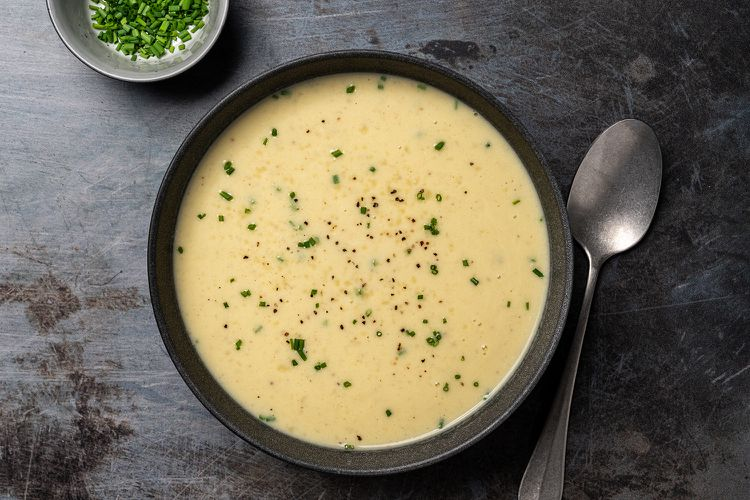

The Best Potato-Leek Soup

Credit: Serious Eats / Eric Kleinberg
Description
It really is ‘the best potato-leek soup’, I promise! Warm your heart and soul with this special dish, and personal favourite of mine. It could bring you back from the brink of death on a frostbitten winter's night.
Ingredients
- 2 tablespoons unsalted butter
- 2 large leeks, white and pale green parts only, rinsed and roughly chopped
- 1 quart homemade or store-bought low-sodium chicken stock
- 2 medium russet potatoes, peeled and cut into quarters (about 3/4 pound)
- 1 bay leaf
- Kosher salt and freshly ground black pepper
- 1 cup buttermilk
- 1/2 cup heavy cream
- 1/2 teaspoon freshly ground nutmeg
- Sliced chives or scallions, for serving
Steps
- Heat butter in a large saucepan or Dutch oven over medium heat until melted. Add leeks, reduce heat to low, and cook, stirring frequently, until very soft but not browned, 10 to 15 minutes.
- Add stock, potatoes, and bay leaf, and season lightly with salt and pepper. Bring to a boil over high heat, reduce to a gentle simmer, cover, and cook until potatoes are fall-apart tender, about 15 minutes.
- To Finish With a Ricer (Recommended): Remove potatoes from soup using tongs and transfer to a bowl. Set aside. Discard bay leaf. Transfer remaining soup to a blender. Slowly increase blender speed to high and blend until completely smooth, about 2 minutes. Return soup to a clean pot.
- Press potatoes through a potato ricer or food mill into the pot with the soup. Whisk in buttermilk and heavy cream. Whisking frequently, bring soup to a simmer over medium-high heat. Whisk in grated nutmeg. Season to taste with salt and pepper and serve with chives or scallions.
- To Finish With a Blender (Faster): Add heavy cream and buttermilk to pot. Discard bay leaf. Working in batches if necessary, transfer soup to a blender. Slowly increase blender speed to high and blend until completely smooth, about 2 minutes. Return soup to a clean pot, pressing it through a fine-mesh strainer with the bottom of a ladle if a smoother texture is desired. Whisking frequently, bring soup to a simmer over medium-high heat. Alternatively, chill completely and serve cold. Whisk in grated nutmeg. Season to taste with salt and pepper and serve with chives or scallions.
Back to Home